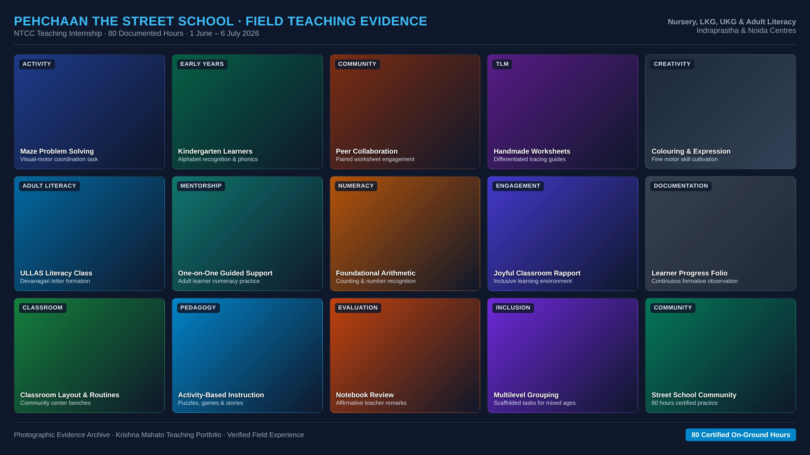

The teaching context
The portfolio record describes a five-week NTCC internship with Nursery, LKG and UKG learners, alongside ULLAS adult-literacy sessions for five learners.
Responsibilities recorded
- Taught foundational literacy and numeracy to Nursery, LKG and UKG learners.
- Used competency-based and activity-based methods.
- Conducted ULLAS adult-literacy sessions for five adult learners.
- Developed classroom-management and community-engagement experience.
Classroom documentary evidence

Archival photo mosaic: Kindergarten maze problem-solving, letter formation, paired worksheets, and one-on-one adult learner numeracy under ULLAS.
Activity-based foundational pedagogy
Working with mixed-age foundational learners required structuring lessons around tangible activity sheets. Visual-motor maze worksheets were introduced to cultivate pencil grip, directional control, and focused attention before transitioning to letter tracing and basic numeracy.
What the document supports
The completion certificate confirms 80 hours as an on-ground intern / teacher at Pehchaan The Street School. It does not report learner outcomes or describe individual teaching activities.
Next reflection to document
A short account of one activity, the learner response and a subsequent adjustment would add evidence of how this experience informed teaching.